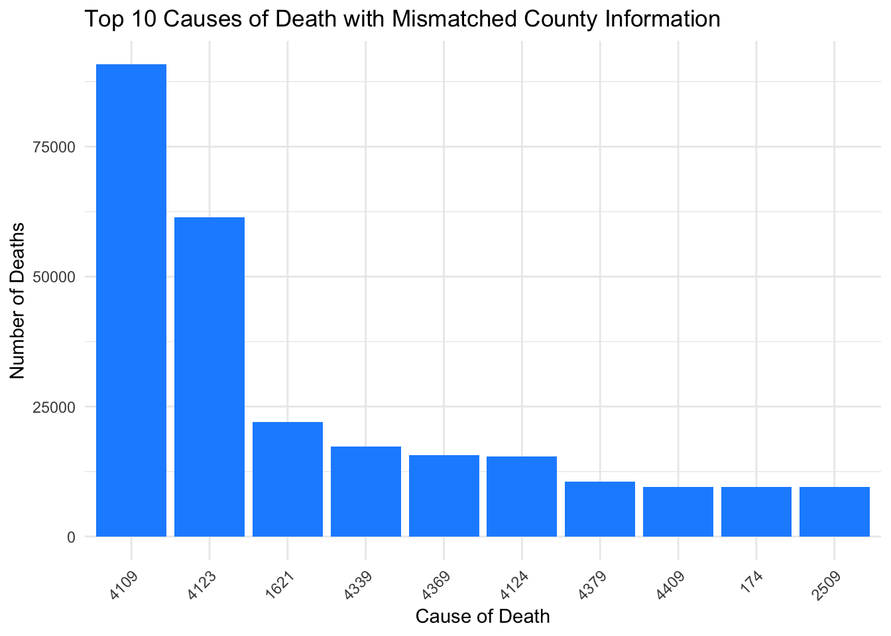
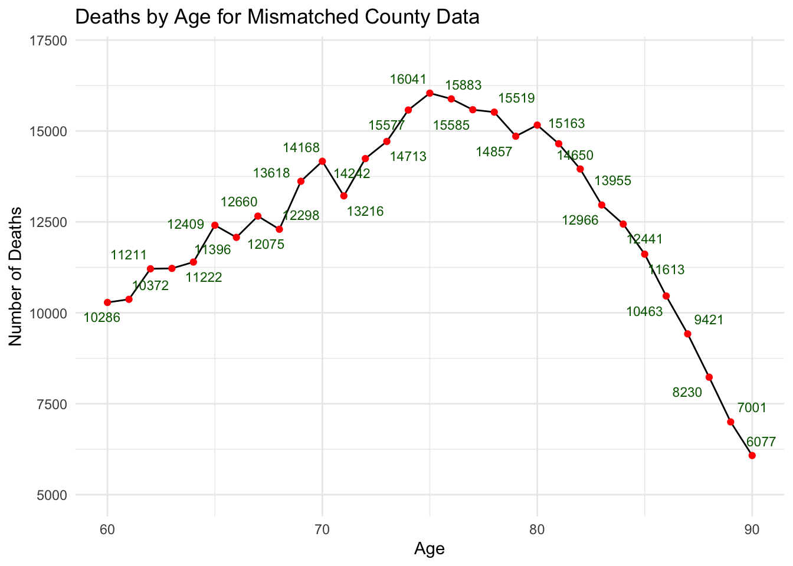

library(dplyr)
Attaching package: 'dplyr'The following objects are masked from 'package:stats':
filter, lagThe following objects are masked from 'package:base':
intersect, setdiff, setequal, unionlibrary(ggplot2)
library(ggrepel)I have selected ucod as Cause, Month, Sex, Age, countyoc as Fips from the raw data set, and summarized records of deaths with the same conditions. All the records in this data set are drawn from 1970.
library(dplyr)
Attaching package: 'dplyr'The following objects are masked from 'package:stats':
filter, lagThe following objects are masked from 'package:base':
intersect, setdiff, setequal, unionlibrary(ggplot2)
library(ggrepel)Here is the summarized data.
setwd("/Users/yuanyulu/nber_mortality_process_2024")
data <- read.csv("data/mort1970.csv")
summary_data <- data %>%
select(ucod, monthdth, sex, age, countyoc) %>%
rename(cause = ucod, fips = countyoc) %>%
group_by(cause, monthdth, sex, age, fips) %>%
summarise(deaths = n(), .groups = 'drop') %>%
mutate(year = 1970)
print(summary_data)# A tibble: 1,687,747 × 7
cause monthdth sex age fips deaths year
<int> <int> <int> <int> <int> <int> <dbl>
1 1 3 1 32 33029 1 1970
2 1 4 2 59 37019 1 1970
3 1 6 1 69 1048 1 1970
4 1 7 1 26 14016 1 1970
5 1 8 2 85 43013 1 1970
6 1 12 2 5 43079 1 1970
7 10 1 1 49 5015 1 1970
8 10 1 1 56 39040 1 1970
9 10 1 1 62 49024 1 1970
10 10 1 1 63 36018 1 1970
# ℹ 1,687,737 more rowsBased on the table above, I counted the records whose county of residence and county of occurrence are different and calculated the proportion of the inconsistencies with all else being the same. The mismatch ratio shows as below.
compare_data <- data %>%
select(ucod, monthdth, sex, age, countyoc, countyrs) %>%
rename(cause = ucod, fips = countyoc) %>%
mutate(match = fips == countyrs) %>%
group_by(cause, monthdth, sex, age, fips) %>%
summarise(
deaths = n(),
matching_deaths = sum(match, na.rm = TRUE),
.groups = 'drop'
) %>%
mutate(
unmatching_deaths = deaths - matching_deaths,
unmatching_ratio = unmatching_deaths / deaths,
year = 1970
) %>%
select(-matching_deaths)
print(compare_data)# A tibble: 1,687,747 × 9
cause monthdth sex age fips deaths unmatching_deaths unmatching_ratio
<int> <int> <int> <int> <int> <int> <int> <dbl>
1 1 3 1 32 33029 1 0 0
2 1 4 2 59 37019 1 0 0
3 1 6 1 69 1048 1 1 1
4 1 7 1 26 14016 1 0 0
5 1 8 2 85 43013 1 0 0
6 1 12 2 5 43079 1 0 0
7 10 1 1 49 5015 1 1 1
8 10 1 1 56 39040 1 1 1
9 10 1 1 62 49024 1 0 0
10 10 1 1 63 36018 1 1 1
# ℹ 1,687,737 more rows
# ℹ 1 more variable: year <dbl>The total mismatch ratio in the whole data set is
sprintf("%.2f%%", 100*sum(compare_data$unmatching_deaths)/sum(compare_data$deaths))[1] "31.90%"I would like to explore these inconsistencies further, while ensuring that the data is instructive, so I sifted through the records for places of residence that didn’t match the actual place of death.
I want to find out whether the cause of death would cause such inconsistency, so I selected the top ten causes of death from the extracted records.
mismatch_cause <- data %>%
filter(countyoc != countyrs) %>%
select(ucod) %>%
rename(cause = ucod) %>%
group_by(cause) %>%
summarise(deaths = n(), .groups = 'drop')
top10_cause <- mismatch_cause %>%
top_n(10, deaths) %>%
arrange(desc(deaths))
print(top10_cause)# A tibble: 10 × 2
cause deaths
<int> <int>
1 4109 90788
2 4123 61409
3 1621 21982
4 4339 17301
5 4369 15599
6 4124 15425
7 4379 10586
8 4409 9532
9 174 9506
10 2509 9490According to Appendix, these 10 causes are …..
ggplot(top10_cause, aes(x = reorder(cause, -deaths), y = deaths)) +
geom_col(fill = "dodgerblue") + # Use a single color for all bars
labs(title = "Top 10 Causes of Death with Mismatched County Information",
x = "Cause of Death",
y = "Number of Deaths") +
theme_minimal() +
theme(axis.text.x = element_text(angle = 45, hjust = 1))
When considering age, there are some missing data in age so I chose to filter the records with ages smaller than 105.
mismatch_age <- data %>%
filter(countyoc != countyrs) %>%
select(age) %>%
group_by(age) %>%
summarise(deaths = n(), .groups = 'drop') %>%
filter(age<105)
ggplot(mismatch_age, aes(x = age, y = deaths)) +
geom_line() +
labs(title = "Deaths by Age for Mismatched County Data",
x = "Age",
y = "Number of Deaths") +
theme_minimal() 
It seems that the mismatched records reach the peak between the ages of 60 and 90. Enlarge this area and the specific values are as follows.
ggplot(mismatch_age, aes(x = age, y = deaths)) +
scale_x_continuous(limits = c(60, 90)) +
scale_y_continuous(limits = c(5000, 17000)) +
geom_line() +
geom_point(color = "red") +
geom_text_repel(aes(label = deaths),
color = "darkgreen",
size = 3,
box.padding = 0.35,
point.padding = 0.5,
max.overlaps = 10) +
labs(title = "Deaths by Age for Mismatched County Data",
x = "Age",
y = "Number of Deaths") +
theme_minimal() Warning: Removed 73 rows containing missing values or values outside the scale range
(`geom_line()`).Warning: Removed 73 rows containing missing values or values outside the scale range
(`geom_point()`).Warning: Removed 73 rows containing missing values or values outside the scale range
(`geom_text_repel()`).
Before the age of 75, the cases of discordance between the place of death and the place of residence increased with the increase of age, and showed a decreasing trend after the age of 75, which may be related to the weakened mobility of the elderly.